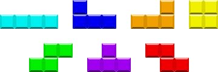

|
Tetrominos, occasionally known alternately as tetrads, blocks, Tetriminos (official name), or tetriminoes, are the blocks used in every known Tetris game. They come in seven shapes, all of which can be rotated and then dropped. Tetrominoes all have an area of four squares. In certain Tetris games, the colors of them vary. The spelling "tetromino" is standard among mathematicians. The Tetris Company had preferred tetramino around 1999 and has used Tetrimino since 2001. TTC has trademarked the name Tetrimino and uses the initial uppercase T. |
 |
Each tetromino has a letter name and several alternative names.
This tetromino is very useful for filling deep 1-wide wells within your stack, and is the only one to be able to clear 4 lines (a Tetris) within traditional rulesets.
Other names include straight, stick, strike, line, long bar, vav (or vov, waw), final nun, one, the cyan piece, the long skinny one, the slim jim, tetril, TGM-red, hot shot, long, slim dandy, the flashmaker, long boi, big poppa, thin lizzy, stack-em-up, Euclid's Arrow, four on the floor, George and hero.
This tetromino can be useful in filling 1-1-2-deep gaps in your stack, as well as clearing lines in a left-side 1-wide well as long as there is a 2-wide opening at the top.
Other names include the blue piece, lowercase R, gamma, ghe, ge, inverse L, Va, reverse L, backwards L, left L, left periscope, left hook, led, left elbow, backwards (or reverse, inverse, etc)-orange, backwards daled (or dalet, daleth, dales), backwards resh (or reish), left gun and blue ricky.
This tetromino can be used in the exact same ways as the J piece in mirrored situations. Note that some specific rotation systems also allow non-mirrored kicks from these tetrominos.
Other names include the orange piece, alpha, outverse J, seven, Vb, L2, right L, backwards J, TNT-magenta, right periscope, right hook, jed, right elbow, backwards-blue, daled (or dale, daleth, dales), resh (or reish), final kaf (or kof), final chaf (or chof, khof, khaf), reverse J, and orange ricky or right gun.
Regarded as an unversatile tetromino due to its lack of unique rotation states, this tetromino can be used for filling deep 2-wide wells, as well as creating 2-tall steps for J- and L-pieces.
Other names include square, block, samech, final mem, samekh, zero, sun, circle, the yellow piece, TNT-gray, smashboy, or box.
This tetromino can be used in filling gaps in your stacks that have steps in them, as well as creating these steps for other tetrominos to utilize. It can also be used for clearing lines in a right-side 1-wide well with a 2-wide opening at the top.
Other names include the green piece, right turn, inverse skew, reverse Z, right skew, H, left N, Wa, saw, backwards-red, right dog, inverted Z, right kink, backward Z, reverse squiggly, backwards squiggly, right squiggly, mirror Z, right zigzag, TGM-magenta, right snake and Rhode Island Z.
This tetromino can be used to fill an inverse-pyramid-shaped hole in your stack, as well as fixing a highly stepwise stack into a more "flat" stack. It can also be used in the infamous "T-spin".
Other names include The Tetris Block, Tetris logo, up-down-left-right, WASD, the purple/magenta piece, Y, Y' T turn, ted, triangle, arrow, small stairs, podium, pyramid, TNT-yellow, TGM-cyan, tire, tires, te, tee, t-piece and teewee.
This tetromino can be used in the exact same ways as the S piece in mirrored situations. Note that, like the J and L pair, some specific rotation systems also allow non-mirrored kicks from these tetrominos.
Other names include the red piece, left turn, outverse skew, right skew, S2, N, right N, Wb, zaw, S in mirror, backwards-green, lightning bolt, left dog, left kink, reversed S, squiggly, zigzag, left squiggly, left zigzag, TGM-green, left snake and Cleveland Z.
By 🔻Juanpi D'Anda🔻